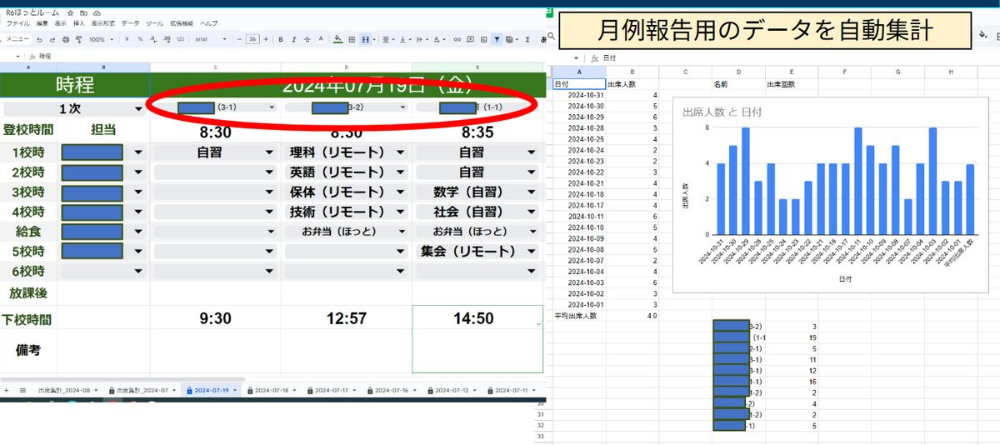
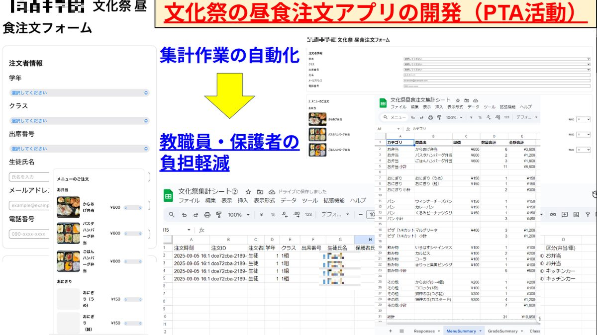
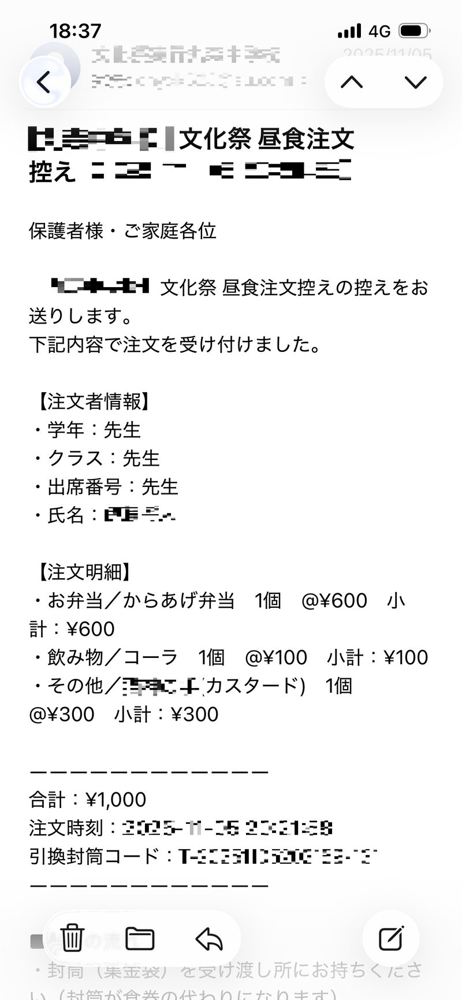

「どこまで簡素化できるか」から始まった
PTA活動や学校の校務で、毎月のように繰り返される単純な作業があります。月例報告の出欠確認、イベント時の注文や集計、メール対応——これらの作業は、本来なら自動化できるはずなのに、手作業で処理されていることが多いです。
「どこまで簡素化できるか」——その問いを立てたのが、自動化への第一歩でした。
小さな一歩：月例報告の自動集計
最初に手をつけたのは、月例報告の出欠データでした。もともと手作業だった月例報告用のデータを、Google Apps Script（GAS）で自動集計するようにしました。毎月のデータ入力と同時に、日別の出席人数グラフやクラス別の出席回数といった統計情報が、自動で出力されるようになりました。
これにより、集計ミスもなくなり、業務の負担が大きく減りました。小さなことから始めることで、「これならできるかもしれない」という感覚が生まれました。

大きな挑戦：文化祭の注文アプリ
次の挑戦は、文化祭のPTA主催の昼食注文システムでした。Googleフォームでも用は足りましたが、実際のネット注文のようななじみのある形にしたくてアプリ化に踏み切りました。
Googleフォームだけの場合より、ユーザー体験が格段に改善され、注文者も集計担当者も、ストレスなく業務に当たることができるようになりました。

「できるか分からない」から「できる」へ
注文システムで最も難しかったのが、注文者へ自動返信メール（アンサーバック）を送る機能です。当初、本当にできるのか分からず、実装を躊躇していました。しかし、生成AIと対話しながら実現方法を探っていくうちに、その障壁は次々と解けていきました。
気づくと、全く新しい仕組みが形になっていました。生成AIとの対話のおかげで、「できるか分からない」ことも、一つ一つ問題を解いていくことで、確実に「できる」に変わるのだということを実感しました。

最大の課題は、いつも技術ではなく
実装する過程で最も苦労したのは、実は想像していた「複雑なコード」ではなく、「スマホでも商品写真が見えるように解像度を落としつつ、読み込みをできるだけ速くする」といった、ユーザー体験に関わる細部でした。
こうした調整こそが、実務的な自動化を本当に使えるものにしていくのだということを改めて感じました。
成果：集計ミスはゼロ
これらの自動化により、集計エラーは完全になくなりました。同時に、集計を担当する職員の業務量も大きく減り、その時間を他の業務に充てることができるようになりました。
学校という組織の中で、「本当は時間がかかりすぎていた仕事」が、一つ一つ解決されていく——その小さな積み重ねが、気づくと大きな変化になっていました。
まとめ：「小さく始める」が最も強い
「できるか分からない」と思っていたことも、生成AIと対話しながら形にできる時代です。だからこそ、最も大切なのは、最初から完璧を目指さないこと——小さなところから始めることです。
月例集計のような小さな自動化で成功体験を積むことで、次の挑戦へのハードルが下がります。そして、それが段階的に広がっていくことで、学校全体の業務改善が進んでいくのだと考えています。
もし、「これも自動化できるんじゃないか」と感じる業務があれば、ぜひ試してみてください。小さな一歩が、確実な変化をもたらします。